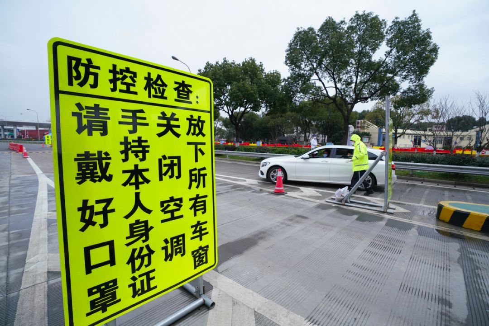
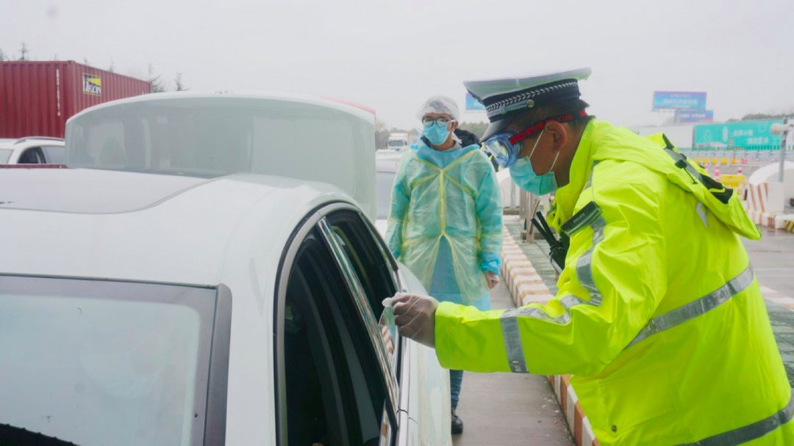

上海确诊101例新冠肺炎，远超SARS，精细化排查仍是最有效防控
原文链接 备份链接 2003年上海仅有8人感染SARS，而本次疫情短短10天已有101人确诊。17年前的经验，这回还有没有用？ 上海的疫情防控有三张网：道口和口岸；发热门诊跟预检分诊；社区。 医生、警察、居民三人小组对所有湖北返沪人 …
_
_
_
_
G60沪昆高速枫泾公安检查站，由上海市公安局松江分局民警负责牵头协调，公安、交通、卫健部门的工作人员和来自各方的志愿者，对每一辆进入上海的车辆执行防疫检查。
_
_
_
_
记者 | 王 煜
目前，各单位的外地工作人员陆续返沪复工，其中有不少选择通过高速公路进入上海。抗击疫情的公路第一道关口，上海守得怎么样？正常复工的人员车辆能否顺畅回到上海？2月11日、12日两天，《新民周刊》记者来到上海高速道口的两处公安检查站，做了现场观察。

2月12日，G60沪昆高速枫泾检查站，入沪车辆正接受检查。摄影：沈琳
六道程序严把关口
2月12日上午，G60沪昆高速枫泾公安检查站，由上海市公安局松江分局民警负责牵头协调，公安、交通、卫健部门的工作人员和来自各方的志愿者，正对每一辆进入上海的车辆执行防疫检查。
《新民周刊》记者在现场看到，查控至少有六道程序：
1、离检查卡口还有几百米的地方，工作人员开始对车辆进行分流引导，例如客货分开、沪牌和非沪牌车辆分开，并提醒他们打开车窗、关闭空调，以免影响之后的测温准确性。
2、志愿者手持上海卫健委开发的“健康云”返沪人员健康信息平台二维码，让在排队等待的车上人员提前扫码填写。如果手机填写不成功，志愿者为他们提供手工填写的表格。现场设置的提示牌和循环的喇叭声也在不断提醒车上人员。

2月12日，G60沪昆高速枫泾检查站。摄影：沈琳
3、民警检查轿车的后备厢或者货车的车厢，确认是否有人员藏匿。
4、车辆开到检查卡口时，多名工作人员上前，询问车上人员来自何处、有否去过重点地区、健康状况如何，确认他们有否在“健康云”登记，并逐一测量体温。
5、交警使用警用设备PDA，对所有外省市人员进行身份查验，确认他们是否符合当前入沪条件。
_6、经过上面的初检，来自重点地区、体温异常以及需要劝返的人员，将来到复检区。前两类人员接受更详细的再次检查后，仍体温异常的将由卫健部门人员用救护车直接送往医院，同车的密切接触人员由属地政府送往集中隔离点。需被劝返人员在此被引导返程。_
上海的9处省界高速道口公安检查站，均已按上述程序开展了疫情查控。各方增援力量也陆续抵达道口检查站。2月11日上午，G50沪渝高速汾湖公安检查站的一名年轻的志愿者，正负责让受检的车内人员手工填写健康信息表，她是来自杨浦区平凉社区卫生服务中心的医护人员，从杨浦到青浦，单向车程就要将近1个半小时。这家社区医疗机构的8人组成志愿者小队，于当天赶来支援。

2月11日，志愿者在高速道口协助入沪人员手工填写健康情况表格。摄影：王煜
G60沪昆高速枫泾公安检查站站长胡军华说，该站点的车流量在上海的省界高速检查站里位居第二，在前些天车流量的高峰期，整个站点的各部门全职人员以及志愿者总数超过940人。在需要时，充足的战斗力量迅速补充到了一线。
严格的查控之下，违规者无所遁形。2月11日上午8时左右，上海市公安局松江分局的民警就是在这个检查站执行查控任务时，在一辆浙牌小轿车后备厢内，发现藏有一名疫情重点地区女性。
民警调查发现，该女子长期在上海工作，1月22日从上海回到重点地区的老家过年。2月11日清晨，她搭乘朋友的轿车回沪，由于听闻上海在各高速公路道口实施了非常严格的查控措施，为避免返沪后被隔离观察14天，所以藏匿在轿车后备厢内，企图蒙混过关。经检测，该女子及车主体温均正常。这是上海警方查获的首起藏匿轿车后备厢企图逃避检查的事件。

2月12日，松江分局民警在G60枫泾检查站查看入沪车辆的后备厢。摄影：沈琳
严控的是病毒，不是“一刀切”拦住人
1月27日14时起，上海把原高速公路114处收费站查控力量全部前移至9处高速公路省界道口公安检查站，实施严格的“逢车必检”。后来，又对在沪无居住地、无明确工作的驾车人员劝返。
2月11日上午，G50沪渝高速汾湖公安检查站站长、上海市公安局青浦分局交警支队高速大队教导员杨海杰在检查一辆小轿车时发现，司机声称自己是从杭州到上海来工作，但是根据他的证件，在警方的系统查不到任何他在上海的居住地。“对不起，根据规定，你现在不符合进入上海的条件。请打开双闪灯，开到前面的复检区，我们会有警车引导你在高速上掉头开往原地。”杨海杰告知该司机。
不久之后的另一根车道上，一辆东部某沿海省份牌照的平板大货车开来。这辆车没有载货，经民警核查，司机在上海没有居住地和明确工作，他也被当即劝返。

2月11日，G50沪渝高速汾湖检查站，一辆大货车被劝返。摄影：王煜
对于个别的特殊情况，上海的劝返也不是“一刀切”。例如，乘车人是来上海搭乘飞机去外地，如果能出示有效的乘机证明信息，民警也会将这样的车辆放行。
对于劝返，杨海杰和胡军华都向记者表示：他们理解上海市政府的此项决策是为了减少不必要的人员流动，降低疫情传播的风险。正常的复工返沪，这是上海目前所需要的。有明确的居住地和工作的入沪人员，对他们的下一步防疫管理就可以落实到相应的社区居委和单位，后者根据入沪人员在“健康云”上填写的信息可以及时联络到每个人，采取相关措施。防疫与复工，并不矛盾。
新华社报道：中共中央政治局常务委员会2月12日召开会议，指出“各级党委和政府要实事求是做好防控工作，对偏颇和极端做法要及时纠正，不搞简单化一关了之、一停了之，尽可能减少疫情防控对群众生产生活的影响”。上海的做法，正符合中央的要求。
牢抓细节，热血奉献
这次的高速省界检查站查控疫情，任务突如其来、情况瞬息万变，对所有人都是一次严峻考验。
1月29日，临近省市突然宣布关闭境内G50高速所有的下匝口，造成上海出口车流量骤增。当天14时30分起，汾湖检查站的车辆开始积压，最多的时候延绵超过5公里。这一突发状况瞬间扰乱了原先的所有部署。站长杨海杰没有慌，他召集了所有正在休息的民警、辅警，让他们紧急全员上岗。
很快，8警12辅的所有岗位设置重新安排妥当。9个车道全部开放，前置分流疏导岗2人，初检拦车岗9人，复检引导岗2人，复检区2人，复检区车辆管理岗2人，剩余的3人每人负责3根车道，做好初检拦车岗与复检引导岗之间的信息对接。在杨海杰的动员下，卫健部门的所有工作人员全员上岗开展防控工作。经过大家的共同努力，19时30分许，车流终于趋于平稳。

2月11日，杨海杰（右）在核查入沪车辆。摄影：王煜
杨海杰随身带着两个手机和两个对讲机，在跟《新民周刊》记者介绍情况时，他每隔两三分钟就要停下来接电话或者回复对讲机，全是在处理道口的相关工作事宜。即使在午餐时间，他也是一手拿着筷子，一手拿着手机，生怕错过了什么信息。连续十四天的道口抗疫工作里，他只回过两次家。
在枫泾检查站，现场所有的疫情防控工作细节，站长胡军华总是一遍又一遍地提醒。他说，这些天来不断有新的增援力量上岗，也总是有新的问题需要解决；因此，细节一定要对每个人每个岗位不断地强调，只有每个细节做好了，才可能把整体的“仗”打赢。
为了压实责任，他还在检查站建立责任倒查机制，如果出现漏检等情况，将通过视频回放把责任追查到具体的个人。

2月12日，胡军华在岗位上。摄影：沈琳
这并不是胡军华第一次参加抗击疫情的战斗。17年前的SARS疫情期间，他当时还在部队服役，在解放军411医院负责后勤保障工作。他说，那时他只需要专注于自己一个岗位的事情；而现在，他要面临的挑战比那时复杂和困难许多。“当时我很年轻，一腔热血义无反顾；现在，我同样责无旁贷。”

征集令
《新民周刊》现面向全国征集新冠肺炎采访对象和真实故事：
如果你是参与抗击新冠肺炎疫情的医护人员或其家属，我们希望聆听你的“战疫”故事，也希望传达你的诉求。
如果你是确诊、疑似患者本人或家属，我们希望了解你和家人如何“抗疫”的过程，让外界了解你的真实经历。
如果你是疫情严重地区的普通市民，我们希望展现你的乐观，并倾听你所需的帮助。
如果你是公共服务人员或各类捐助者，我们希望看到你的“最美逆行”，记录下你的无私。
……
抗击新冠肺炎疫情，我们诚征对疫情了解的社会各界人士，提供相关线索，说出你的故事，让我们用新闻留存这一切。
《新民周刊》新冠肺炎线索征集值班编辑联系方式（添加时请简要自我介绍）：
周一：应 琛 微信号：paulineying0127
周二：金 姬 微信号：gepetta
周三：黄 祺 微信号：shewen-2020
周四：周 洁 微信号：asyouasyou
周五：孔冰欣 微信号：kbx875055141
周六：吴 雪 微信号：shyshine1105
周日：姜浩峰 微信号：jianggeladandong
新闻是历史的底稿，你们是历史的见证者。期待你的故事、你的线索！

▼
大家还都在看这些
▼
转载请在评论区留言，获得授权！
转载时，须注明作者、出处和微信号


原文链接 备份链接 2003年上海仅有8人感染SARS，而本次疫情短短10天已有101人确诊。17年前的经验，这回还有没有用？ 上海的疫情防控有三张网：道口和口岸；发热门诊跟预检分诊；社区。 医生、警察、居民三人小组对所有湖北返沪人 …
原文链接 备份链接 2003年SARS疫情，常住人口最多（1700万）的上海市，仅有8人感染。且都为散发状态，未出现大规模聚集性爆发。 上海市在疫情未到来时，就做了充分的准备。下沉到基层社区、落实到个人的防控措施，对于疫情控制起到重要 …
原文链接 备份链接 图片来源：图虫 记者：潘金花 “ 新加坡卫生部长说，“健康的人戴口罩，往往会给我们一种错误的安全感。” ” 新加坡最大的商业银行星展银行（DBS）12日证实，该银行一名职员确诊感染新型冠状病毒。截至当天中午，新加坡确诊 …
原文链接 备份链接 面对依然紧张的防疫形势，上海的街道、居民区、楼宇不断放出防疫大招，以上海人特有的智慧筑起“上海堡垒”，守卫这座城市。 文 | 陈 冰 2月10日是上海正式意义上的“复工日”，在经历了一个史无前例安静春节之后，人员返程、 …
原文链接 备份链接 摄影：方卓然 记者：方卓然 编辑：徐菲 “ 在一级响应期间，上海将对没有居住地的、没有明确工作的人员，原则上加强劝返力度，令他们暂缓入沪。 ” “对不起，你在上海没有居住地或落脚点，按照上海的相关规定，我们将对您进行劝 …